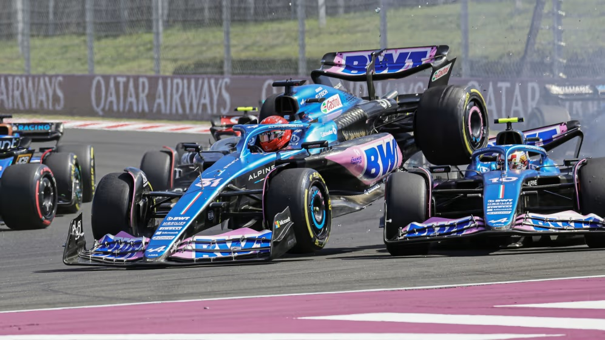
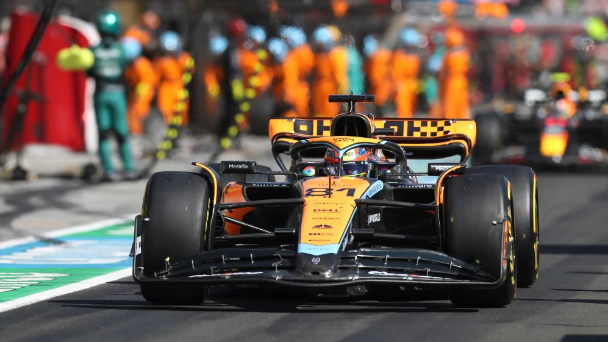

'Disappointed' Zhou apologises for his part in opening lap
incident at Hungarian GP

Zhou Guanyu was full of remorse for the part he played in the
opening lap collision at the Hungarian Grand Prix – with the Alfa
Romeo driver also giving an insight into where it all went wrong
for him at the start of the race. After qualifying in a
career-high fifth place on Saturday, Zhou’s hopes of a third
points scoring outing of the season on Sunday – after Australia
and Spain – took a huge hit when a slow start saw him drop down
the field. Zhou eventually got going
and, as he looked to make his way back up the order, he collided
with the rear of Daniel Ricciardo’s AlphaTauri, forcing the
Australian into the back of Esteban Ocon, who also took out his
Alpine team mate, Pierre Gasly. Reflecting on the action-packed
start, after finishing 16th in Budapest, a disappointed Zhou said:
“I think [the start] was finished after the getaway.
Unfortunately, something was wrong, but I don’t know yet.
Pit stop ‘didn’t make much difference’ with Piastri able to take
the positives from P5 finish

Oscar Piastri might have started behind his team mate in Hungary,
but thanks to a great getaway and a racer’s instinct for picking a
gap the Australian found himself running second behind Max
Verstappen at the end of the first lap in Budapest. But the
Australian wound up coming home a distant fifth at the end of an
attritional race that saw the whole field need two stops thanks to
high levels of tyre degradation. It was in the first pit stop
period that Piastri lost out to his team mate with McLaren calling
Lando Norris in first. With the undercut proving powerful, the
Briton was able to gain enough time on his out-lap to draw level
with Piastri as he exited the pit lane – and pull out an easy move
on the rookie, whose tyres were not up to temperature.
‘We’ve proved some people wrong’ – Defiant Norris happy with
back-to-back podiums for McLaren “I think it wasn’t ideal to come
out behind Lando [Norris] but when you finish 30 seconds behind
him, it didn’t make much difference,” Piastri said afterwards. “I
think it was just a lot of tyre management, I couldn’t really do
much more to defend. I mean I tried as hard as I could against
Checo [Perez] and he was out of sight in about two laps.
Piastri’s mid-race battle with a recovering Sergio Perez had the
crowd on the edge of their seats, the McLaren man doing everything
he could to make the Mexican’s life as hard as possible after
Perez had overtaken around the outside into Turn 1. Piastri
provided some tough opposition, sticking with the RB19 into Turn 2
and even running wide and dipping a wheel on the grass, but
ultimately, Perez had too much pace. “I think if we’d had the old
car here we would have been probably a lap behind where we were
now," said Piastri, referencing those upgrades that have
transformed McLaren’s season of late. "Still a really positive
weekend for the team, a good weekend for myself, just a lot to go
through, digest and learn from.Each team brings unique strengths to the competition.

.jpg)